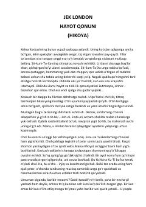

HQTabiatning o‘zgarmas qonunlari va yolg‘iz qolgan keksa cholning so‘nggi damlari haqidagi hikoya.
Jek Londonning ushbu hikoyasida hayot va tabiatning o‘zgarmas qonuniyatlari, qariyalarning qismati va ojizligi ta’sirli tarzda tasvirlangan. Qabila tomonidan so‘nggi damlarida yolg‘iz qoldirilgan keksa Koskushning o‘ylari va tabiat qonunlariga bo‘ysunishi chuqur falsafiy ma’noda ochib berilgan.